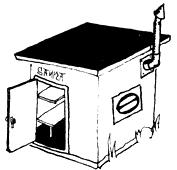
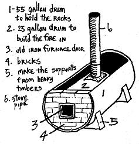
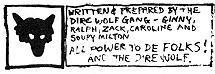

The sauna bath has gained widespread popularity in North America the last couple of years and anyone who has had one doesn't need to be told why. Unfortunately, as the commercial availability of the sauna has increased, there has been a corresponding decrease in the understanding of this traditional Finnish bath.
The sauna is an integral part of a Finnlander's life: It'swhere he cleanses both his body and his soul and it's also an important social institution in the Finnish community. The construction of a sauna is one of the first projects any good Finnlander completes when he moves into a new home.
I was introduced to the sauna when I was about ten years old by my dad, a raving Finnish anarchist. He had waited years to get the family into one. You see, dad had courted mom by driving around the countryside on Saturday night looking for a place to take a bath and mom-raised in the city by strict Scandinavian parents and not speaking a word of Finnish-had come to almost lothe saunas as a result. So if dad was to have a sauna, it would have to be through the enthusiasm of us kids . . . and he had waited years for this day.
Dad had not waited patiently, either. Months before the first bath, he had found someone handy with torch and soldering iron to put together what is known as the kiuas, or sauna stove.
Our kiuas was nothing fancy. Dad and his friend made it by cutting away the front and part of the top of a 55gallon oil drum. Inside the large drum they placed a 25-gallon oil drum fitted with an iron door and stovepipe (see illustration). Rocks, 2 to 6 inches in diameter, were placed on a heavy grill laid across the open top of the larger drum.
Our steam room was one corner of a boathouse that was already on the property. It was blocked off with large pieces of plywood set on the rafters for a ceiling and gunny sacks hung down for the two remaining walls.
Water was hauled in and poured into a washtub near the kiuas so that we would have warm water for washing later on and most of the afternoon was spent carefully stoking the fire.
A sauna can be heated in an hour and a half but the rocks never get hot all the way through in that amount of time and, as a result, will cool off too quickly.
I've already mentioned that the sauna stove is called the kiuas. Here's two more words for your Finnish vocabulary: The sauna steam is called loyly and the switches used in the sauna (traditionally made of birch, although oak branches can be used) are vihta.
A vihta is made by taking a bundle of leafy birch branches and binding the butt end tightly with cord to form a handle. Dip the whisk in water and place it on the hot rocks for a few minutes just before using to soften it a little. Then, when the bathhouse is good and hot (and you are too), switch yourself all over with the whisk. You'll find it very invigorating and your skin will tingle.
For that matter, almost any quick movement in a really hot sauna will make your skin tingle because the temperature of the air can easily be higher than the boiling point (2120 F) of water.
Mentioning extreme temperatures brings me to a last point: The winter sauna is the same as the summer sauna with one addition . . . cold. It's very important to build the sauna fire big enough and hot enough in the winter. Take your time and soak up lots of heat. Then pour a little water on the rocks to increase the effects of that heat.
When you've reached the extreme limits of the heat-plus-humidity that you can stand, tough it out as long as possible . . . then run out and dive into a snow bank.
You'll never forget it.
HUNDRED FLOWERS/P.O. Box 7152/
Powderhorn Station/Minn./Minn. 55407.
The following wisdom has been extracted from SAUNA, THE FINNISH BATH, a very small (86 pages), relatively expensive ($3.95) and quite authorative book on the subject by H.J. Viherjuuri. The volume is printed in this country by Stephen Greene Press and is available from MOTHER.
• The whole purpose of the sauna is to induce perspiration and the body perspires much more efficiently in dry air than in damp. It is the heat-and not the humidity-that is most important in the sauna.
• Saunas should be built from wellseasoned, rough, raw wood to allow the necessary circulation of air and water through the walls. The inside of the bathhouse should not be oiled nor painted.
• The simplest sauna is a one room log but with a large, open stove upon which stones are piled. The stones can be heated red hot, causing temperatures as high as 280° F, although a maximum of 190-200 degrees is ideal. Naked bathers sit or lie on a raised, slatted platform near the roof along one side of the room. Prone position is best because the body is more evenly heated that way. During the bath, small quantities of water are thrown on the stones to make steam but the air remains fairly dry because the moisture is instantly absorbed by the wooden walls.
• Sharp edges and nail heads become intolerably hot in a sauna. Build your platform with rounded edges and wooden pegs or countersunk nails.
• Traditional sauna walls are built somewhat loose at the bottom to allow some circulation of air . . . but very tight at the top to hold the heat.
• The stones for the stove should not expand under heat, nor crumble, and their heat retention should be as great as possible. Rocks slightly- bigger than a clenched fist are the best size. The traditional Finnish sauna stones are basaltic. Igneous stones, such as quartzite (found along streambeds), are often used in the U.S.
• The heat in a sauna is non-radiant. The stones absorb the heat from the fire and it then circulates on convection currents throughout the bathhouse. This indirect heat is gentle and confistant.
• A wood that burns with a high flame is best for heating the stones.
• The fire in a sauna is sometime started in the morning for an evening bath. Once the bathhouse is sufficiently hot it needs to "ripen" before it is used. The heat should steep throughout the sauna and warm everything through and through.
• The sauna cleans the skin as only a good perspiration bath can, makes the limbs supple, refreshes one completely, increases an individual's capacity for work, improves sleep and is a valuable aid ;n weight reduction.
• A sauna is very relaxing after heavy mental exertion but it is best to rest before entering the bathhouse if you are physically exhausted.
• There is no need to go into a sauna hungry but a full stomach and the sauna do not agree.
• People suffering from serious respiratory and heart diseases or high blood pressure should be careful about using the sauna.
• The Finns say, "Two places are holy: Church and sauna." Never hurry, never rush, never bustle in the sauna. Whistling and singing are out of place on the platform. So is too much talking. One should sit or lie quietly and peacefully.
• A complete sauna might include: (1) Relaxing on a low platform in 140° air for five minutes then climbing to a higher platform for a 15 minute bake at approximately 175°, after which you (2) pour a little water on the stones to bring the humidity up to about 10%. Then you (3) whisk the body to loosen any dirt and dead skin cells before (4) leaving the sauna for a brief cooling off in the open air or under a cool shower. Next, (5) a thorough scrubbing and rinse on the floor of the sauna is followed by (6) another steeping on the highest and hottest platform in the bathhouse. Finish with (7) a final plunge into a cold lake, a roll in the snow or an icy shower to cool off, (8) a natural drying of the body in fresh air and (9) a 10 to 15 minute rest.
• The feeling of well-being after a cold dip or roll in the snow following a sauna is one of the most delightful sensations the human body can experience. If the body has been properly heated and whisked, there is no danger of chilling.
• "A sauna, whenever possible, should be built on the shores of a lake or river. The moments immediately after the bath, so rich in enjoyment, are even more perfect if one can lie naked in the fresh air, looking out over a lovely stretch of land and water."
|
 |
 |
 |